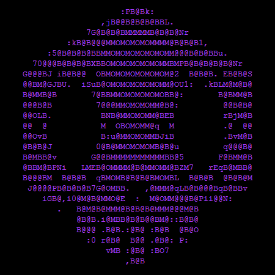

Worm
Se propageait via email avec une pièce jointe, provoquant des dégâts massifs par propagation rapide.
- VecteurEmail + pièce jointe
- ImpactPropagation mondiale
- LeçonMéfie-toi des pièces jointes

ACCESS: GRANTED • CHANNEL: SECURE • CLEARANCE: OMEGA
Dossier de synthèse (éducatif) — vecteurs, impacts, bonnes pratiques et hygiène cyber.
Se propageait via email avec une pièce jointe, provoquant des dégâts massifs par propagation rapide.
Ransomware exploitant une faille Windows pour chiffrer des fichiers et réclamer une rançon.
Malware sophistiqué ciblant des infrastructures industrielles, connu pour son approche très spécifique.
Ver Windows exploitant une faille réseau et créant un vaste botnet difficile à neutraliser.
Attaque destructive déguisée en ransomware, capable de rendre des postes et serveurs totalement inutilisables.
Cheval de Troie bancaire conçu pour voler des identifiants et contrôler des machines à distance.
Un test côté navigateur ne remplace pas une vraie politique côté serveur, mais il aide à choisir un mot de passe solide.
—